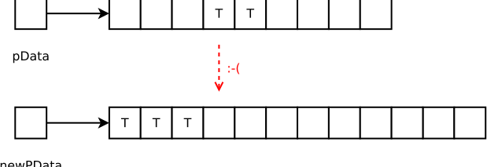

Kivételek és kivételbiztos kód
Czirkos Zoltán · 2019.03.19.
Kivételek és erőforráskezelés. Kivételbiztos kód, garanciák. Másoló és mozgató konstruktorok kivételkezelés mellett.
A kivételkezelés szintaktikáját megérteni könnyű. Talán még a szemantikáját is: eldobjuk a kivételt, és ugrunk oda, ahol majd el lesz kapva. A kivételkezelés azonban jóval több ennél. A kivételeket használó program teljesen más felépítésű, mint a kivételek használata nélkül megírt párja. A módszer lényegét úgy lehet igazán megérteni, ha összehasonlítjuk a két változatot. Ebben az előadásban ebből indulunk ki, utána pedig azt nézzük meg, mikre kell figyelni egy kivételekkel dobálózó programnál.
Gyakran könyvekben is lehet találkozni az alábbihoz hasonló kódrészletekkel.
és rossz példa
try {
if (b == 0.0)
throw std::runtime_error("division by zero");
std::cout << "a/b == " << a/b << std::endl;
} catch (std::exception &e) {
std::cerr << e.what();
}Ez a lehető legrosszabb módja a kivételkezelés bemutatásának. Nehéz is megmondani, hogy hol rossz, mert tulajdonképpen az egész rossz. Még ha működik is a program, a kivételkezelés egyszerűen nem erre való.
A vezérlésátadás
Mit mondhatunk a kivételekről?
-
A
throw/catchpáros egy vezérlési szerkezetet alkot.Az
if-hez,while-hoz és függvényhívásokhoz hasonlóan athrowis egy vezérlésátadó utasítás. Ezzel is a programkód egy meghatározott részére tudunk ugrani. Athrowtulajdonképpen egy olyangoto, amellyel közvetlenül acatchblokkhoz ugorhatunk. Ez a vezérlésátadás akár függvényhívásokon keresztül is történhet. A veremben „felfelé” haladunk, azaz valamelyik hívóhoz jutunk vele vissza.Bár gyakran
try-catch-ként beszélünk erről, igazából nem atryés acatcha lényeg, hanem athrowés acatch. Athrowmutatja, hogy honnan ugrunk, acatch, hogy hova. Atrycsak azért van, hogy megjelölje azt a blokkot, ahonnan a kivétel jöhet, olvashatóbbá tegye a kódot. Ez éppenséggel lehetne egy utasításblokk is, de külön kulcsszóval megjelölve a programozó számára is jobban látszik, hogy mi a cél. A hátultesztelő ciklus is be van vezetve egydo-val. -
A függvények kivétel dobásával olyan hibát tudnak jelezni a hívójuk számára, amelyet érzékelni tudnak, de kezelni nem.
Az általános tapasztalat a programokban az, hogy a hiba érzékelésének helyén legtöbbször nem vagyunk képesek javítani is a hibát. Ha a függvényünk feladata az, hogy visszatérjen két szám hányadosával, és tudjuk azt is, hogy nullával nem lehet osztani, akkor a függvény nem tudja ellátni a feladatát a nulla értékű paraméternél:
double divide(double a, double b) { if (b == 0.0) throw std::invalid_argument("division by zero"); return a/b; }A hibát nem tudja kezelni, mert nem tudhatja, hogy a hívónak mihez van szüksége a hányados értékére. Visszatérnie viszont valamivel kellene, a visszatérési érték nem maradhat inicializálatlanul. Ezért kell a kivétel, hogy jelezze a hívó számára a hibát. Hogy szóljon neki, hogy nem lehetett megoldani a feladatot. A
catchblokk pedig azon a helyen lesz, ahol már kezelhető a probléma. Ezért nem kerül egy függvénybe athrowés acatch: ha helyben le tudnánk kezelni a hibát, akkor egy simaifkellene csak. -
A kivételkezelés arra jó, hogy egyszerűsítsük a vezérlési szerkezeteket a programunkban.
A kivételkezelést C++-ban akkor tudjuk igazán kihasználni, ha RAII-t használunk, tehát ha az objektumaink destruktorai kezelik az erőforrásokat.
3 3 3.4 9.2 0 1.2 0 4.5 -3 5.6 11
A vezérlési szerkezet egyszerűsítése
Lássunk minderre egy nagyobb példát! Ehhez egy C-ben, kézi memóriakezeléssel megírt, hibát a visszatérési értékében jelző függvényt „upgrade”-elünk. Az új változat C++-os, automatikus memóriakezelésű, hiba esetén kivételt dobó függvény lesz.
A függvényünk beolvas egy fájlt, amelyben egy mátrix tárolódik az oldalt látható módon. A szövegfájl első sorában lévő két egész szám a szélesség és a magasság, a többi sorban pedig a számok. A visszatérési értéke egy kétdimenziós dinamikus tömb (a méretet, tegyük fel, hogy valami varázslat útján megkapja a hívó).
kivételek nélkül
double **read_matrix_1(char const *filename) {
FILE *fp = fopen(filename, "rt");
if (fp == NULL)
return NULL;
int w, h;
if (fscanf(fp, "%d %d", &w, &h) != 2) {
fclose(fp);
return NULL;
}
double **ret = (double **) malloc(sizeof(double *) * h);
if (ret == NULL) {
fclose(fp);
return NULL;
}
for (int y = 0; y < h; ++y) {
ret[y] = (double *) malloc(sizeof(double) * w);
if (ret[y] == NULL) {
for (int yy = 0; yy < y; ++yy)
free(ret[yy]);
free(ret);
fclose(fp);
return NULL;
}
}
for (int y = 0; y < h; ++y) {
for (int x = 0; x < w; ++x) {
if (fscanf(fp, "%lf", &ret[y][x]) != 1) {
for (int yy = 0; yy < h; ++yy)
free(ret[yy]);
free(ret);
fclose(fp);
return NULL;
}
}
}
fclose(fp);
return ret;
}Az erőforrások kézi kezelése nagyon nehézkessé teszi a programot. Minden egyes helyen, ahol hibát érzékelünk, vissza kell bontani mindent, amit addig felépítettünk – fel kell szabadítani a mátrix sorait, pointertömbjét, és be kell zárni a fájlt. Figyelembe kell venni azt is, hogy az építkezésben hol tartottunk; az elején még csak a fájl bezárásával kell foglalkozni, a végén mindennel.
Írjuk át ezért úgy a programot, hogy a fájlkezelésre az std::ifstream osztályt
használja (ennek destruktora bezárja a fájlt), a visszatérési érték pedig nem egy nyers pointer, hanem egy mátrix
objektum!
Matrix read_matrix_2(char const *filename) {
std::ifstream is;
is.open(filename);
if (!is.is_open())
throw std::runtime_error("nem nyitható meg");
int w, h;
if (!(is >> w >> h))
throw std::runtime_error("hibás méretek");
Matrix ret{w, h};
for (int y = 0; y < h; ++y)
for (int x = 0; x < w; ++x)
if (!(is >> ret(x, y)))
throw std::runtime_error("hibás számok");
return ret;
}A 40 soros programkód 15 sorossá vált (persze részben amiatt, hogy a foglalással nem kell bajlódni). Amit érdemes észrevennünk, az az, hogy most nem tudjuk null pointerrel jelezni a hibát. A függvény visszatérési értéke most egy mátrix. Ezzel a függvény ígéretet tesz, hogy ha meghívják, akkor ő vissza fog adni egy mátrix objektumot. Fájlkezelési hiba esetén azonban nem tud ilyet adni. Ezt nem úgy kell jeleznie, hogy nulla méretű mátrixot ad vissza, mert akkor adott vissza mátrixot. Úgy kell jeleznie, hogy semmit nem ad vissza, hanem helyette kivételt dob. (Ezzel mondja azt a hívónak, hogy tőle független körülmények miatt nem sikerül a kérés teljesítése.) A mátrix beolvasását a hívó is valószínűleg beépítette egy műveletsorba:
try {
/* műveletsor, amelynek lépései egymásra épülnek */
Matrix h = read_matrix_2("matrix.txt");
std::cout << h;
} catch (...) {
/* ... */
}Ha nincs mátrix, akkor a műveletsor végrehajtásának meg kell szakadnia. Amikor a rendes visszatérési érték helyett egy
kivétel objektum érkezik a függvényből, ez meg is történik, a vezérlés átadódik a catch blokkba. Éppen ez a lényeg!
A hívónak ezért nem kell ellenőriznie azt, hogy hiba történt-e, és így sokkal tisztább a vezérlési szerkezete.
Jelenleg a mátrixot beolvasó read_matrix_2() függvényünk még mindig ilyen, tele van tűzdelve a hibák ellenőrzésével: ha nem sikerült megnyitni a fájlt,
ha nem sikerült beolvasni a méretet, ha nem sikerült beolvasni a számokat. A sikertelen fájlműveleteket azonban nem csak
így tudjuk ellenőrizni, hanem úgy is, hogy az std::istream osztálytól kivételt kérünk hiba esetén. Ha így
teszünk, a sok if() elmaradhat:
Matrix read_matrix_3(char const *filename) {
std::ifstream is;
is.exceptions(std::ifstream::badbit
| std::ifstream::eofbit
| std::ifstream::failbit);
is.open(filename);
int w, h;
is >> w >> h;
Matrix ret{w, h};
for (int y = 0; y < h; ++y)
for (int x = 0; x < w; ++x)
is >> ret(x, y);
return ret;
}Látjuk, hogy így még egyszerűbb lett a vezérlési szerkezetünk; csak le kellett írnunk sorban a teendőket, ahogyan a mátrix beolvasását elvégezzük. Ez a kivételkezelés igazi értelme. Egyszerűbbé válik tőle a számítási folyamatunk leírása, egyszerűbbek a vezérlési szerkezetek. Ezért van szükségünk a kivételek mellé a destruktorokra is: ha azok nem lennének, akkor mindezt nem engedhetnénk magunknak, mert még mindig tele kellene legyen a programunk az erőforrások felszabadítását végző kódrészletekkel.
Azokban a nyelvekben, ahol nincsenek destruktorok, ugyanez finally utasításblokkokkal történik:
try–catch–finally. try: a kritikus programrész, catch: ha kivétel
történt, finally: a programrész, amit akkor is végre kell hajtani, ha kivétel történt, és akkor is, ha nem. Továbbra
se felejtsük el, hogy az erőforrás nem csak memória lehet, hanem nyitott fájl, hálózati kapcsolat, adatbáziskapcsolat, a
videókártyán lefoglalt textúra és még sok minden egyéb dolog. Ezeknél az automatikus szemétgyűjtés nem segítene.
Nézzük meg, hogy néz ki mindez egy erőforrást kezelő osztály szemszögéből, mint amilyen a fenti mátrix is! Az egyszerűség kedvéért tekintsünk egy egyszerű dinamikus tömb típust:
template <typename T>
class Vector {
public:
/* ... */
private:
size_t size_;
T *data_;
};template <typename T>
Vector<T>::Vector(size_t size) {
size_ = size;
data_ = new T[size_];
}Ennek egyparaméterű konstruktora adott méretű tömböt foglal. Ebben a konstruktorban, bár nem látszik rajta, több helyen is
keletkezhet kivétel. Az egyik hely a new operátor memóriafoglalás része. Ha nincs elég memória, akkor ez egy
std::bad_alloc típusú kivételt dob, amit szándékosan nem kapunk el. Ilyenkor nem jöhet létre a vektor sem.
Kivételdobás konstruktorból
A konstruktoroknak nincs visszatérési értéke, ezért konstruktorból csakis és kizárólag kivétel dobásával lehet hibát jelezni. Ha egy konstruktorból kivételt dobunk, akkor azzal megakadályozzuk az objektum létrehozását.
A másik helyzet pedig az a pont, ahol a T-k alapértelmezett konstruktorai futnak. Ezeknek is lehetnek erőforrásaik,
és előfordulhat, hogy valamelyik példány konstruktora kivételt dob. Az itt keletkező kivételekkel sem kell foglalkozni. A fordító a
new T és a new T[] alakú kifejezések hatására olyan kódot generál, amelyben szükség esetén
automatikusan megszünteti a már létrejött objektumokat, és felszabadítja a memóriaterületet. Ezt úgy is
mondhatjuk, hogy a new T és a new T[] kifejezések hatása atomi (atomic), bonthatatlan: vagy lefoglalódik
a terület és létrejönnek az objektumok, vagy nem történik meg ezek közül semmi.
Vegyük szemügyre a másoló konstruktort!
template <typename T>
Vector<T>::Vector(Vector<T> const &the_other) {
size_ = the_other.size_;
data_ = new T[size_];
for (size_t i = 0; i != size_; ++i)
data_[i] = the_other.data_[i]; // kivétel?
}Ez először az előbbi konstruktorhoz hasonlóan lefoglalja a memóriaterületet. Ha ilyenkor kivétel keletkezik, azt nem
kapjuk el, hanem szándékosan továbbengedjük itt is a hívóhoz. Viszont nem ilyen egyszerű a helyzet a tömb elemeinek másolásánál!
Képzeljük el, hogy a tömbelemek sztringek, azaz T = std::string. A jelölt helyen az alapértelmezett konstruktorral
létrehozott sztringeket felülírjuk a másik vektorban lévőkkel. Ezek valószínűleg már nem üres sztringek, tehát a ciklus minden
egyes értékadása egy memóriafoglalással jár, ami potenciálisan sikertelen művelet. A size_ darab értékadás közül
bármelyik kivételt dobhat. Itt nem engedhetjük meg azt, hogy gondolkodás nélkül továbbengedjük a kivételt, ugyanis a
data_ tömböt már lefoglaltuk. Amíg nem futott le a Vector konstruktora teljes egészében,
addig az objektum nem számít létezőnek, és így a destruktora sem fog lefutni!
Csak az az objektum számít létezőnek, amelynek teljes egészében lefutott a konstruktora. Ha ezt a kivételt nem kapjuk
el, memóriaszivárgást kapunk; a new T[size_] tömb megmarad. Ezért ezt muszáj elkapni, és ilyenkor a
felszabadítást kézzel elvégezni, mégpedig így:
template <typename T>
Vector<T>::Vector(Vector<T> const &the_other) {
size_ = the_other.size_;
data_ = new T[size_];
try {
for (size_t i = 0; i != size_; ++i)
data_[i] = the_other.data_[i];
} catch (...) {
delete[] data_; // igen, konstruktorban delete
throw;
}
}Ebben a kódrészletben az ismeretlen típusú (... van a helyén) kivételt elkapjuk, elvégezzük a memória
felszabadítását, és végül az elkapott kivételt az üres throw kulcsszóval továbbdobjuk a hívónak.
Majd mindjárt látunk minderre egy egyszerűbb megoldás is. Előbb még nézzük meg, mi a helyzet a mozgató konstruktorral!
template <typename T>
Vector<T>::Vector(Vector<T> && v) noexcept {
this->size_ = v.size_;
v.size_ = 0;
this->data_ = v.data_;
v.data_ = nullptr;
}Itt csak néhány beépített típuson használt értékadás van, ez nem fog kivételt dobni. Ezért meg is tudjuk jelölni, hogy ebben a függvényben soha nem keletkezik kivétel. Ennek jelentőségéről mindjárt szó lesz még.
Lássuk végül a destruktort!
template <typename T>
Vector<T>::~Vector() {
delete[] data_;
}A destruktor delete[] sora meghívja a destruktorokat, és felszabadítja a memóriaterületet. A felszabadítás mindig
egyszerű művelet, abból sok baj nem lehet, így ez valószínűleg nem dobhat kivételt. De ennek muszáj is így lennie! Ki kell kötnünk,
hogy nem is szabad kivételt dobniuk, mert azok a kivételek szinte kezelhetetlenek lennének. Ha a T-k destruktora
dobna, akkor a másoló konstruktorban, a másolás közben keletkezett kivétel utáni takarításban, a delete[] data_ sornál
egy újabb kivétel keletkezne.
A destruktorokat az automatikusan kezelt objektumok felszabadításánál (stack unwinding) is magától hívja a fordító, ahogy
továbbítódik a hívó felé a kivétel. Olyankor sem szabad újabb kivételnek keletkeznie, mert ott még elkapni sem lehetne. Jegyezzük
ezért meg: destruktorból soha nem szabad kivételt dobni. A noexcept-et kiírni viszont itt nem kell, mivel a
fentiek miatt a fordító a destruktort automatikusan noexcept-nek tekinti, akkor is, ha nem írjuk ki ezt a
kulcsszót a végére.
Így működik a new T[]
Egy new T[100] alakú kifejezés leírásakor tulajdonképp a fordító egy hosszabb kódrészletet generál.
Ez a kódrészlet ügyel arra, hogy a végrehajtás atomi legyen, tehát hajtódjon végre teljes egészében, vagy dobjon
kivételt, és ne maradjon nyoma. A 100 elemű tömböt példának véve, a generált kódrészlet az alábbihoz hasonló működésű
(kifejtve minden hibalehetőség kezelését):
T* igy_mukodik_a_new() {
/* memória foglalása, és ha sikertelen, kivétel dobása.
* ezt az ::operator new csinálja. */
T *mem = memoria_foglal(sizeof(T) * 100);
if (mem == nullptr);
throw std::bad_alloc();
/* megvan a memóriaterület, konstruktorok hívása.
* ha bármelyik kivételt dob, az addig sikeres
* konstruktorokat meghívja, és a memóriát is felszabadítja. */
size_t i = 0;
try {
while (i < 100) {
new (&mem[i]) T();
i++;
}
} catch (...) {
while (i > 0) {
--i;
mem[i].~T();
}
memoria_felszabadit(mem);
throw;
}
/* kész */
return mem;
}Hasonló a helyzet a new T() kifejezésnél is, egyetlen objektum dinamikus létrehozásakor. A memória foglalása is
lehet sikertelen, és a konstruktor hívása is lehet az. Ha a foglalás sikerült, de a konstruktor nem, akkor a felszabadítás
megtörténik automatikusan.
Miért ne dobjunk kivételt destruktorból?
Sok szemléletes példát lehet mutatni rá, miért nem szabad destruktorból kivételt dobni. A fenti példa mellett sokat mond ez az egyszerű kódrészlet is:
T *p = new T[100];
/* ... */
delete[] p;A delete-es sor 100 darab destruktort hív. Minek kellene történnie akkor, ha ezek közül
a 13-adik egy std::runtime_error-t, a 29-edik egy std::out_of_range-et,
a 87-edik pedig egy std::logic_error-t dobna? Egyáltalán mit jelentene az, ha egy destruktor kivételt dob:
nem engedi magát az objektum megszüntetni?
Láttuk, hogy a másoló konstruktorban el kellhet kapni egy kivételt, és fel kellhet szabadítani a memóriaterületet,
ha hiba történik. A delete[] data_ sor a destruktorhoz hasonló, de mégis kénytelenek
voltunk ezt megtenni, mert amíg nem futott le teljes egészében a konstruktor, addig az objektum nem számít létezőnek, és
így a destruktor törzse sem fut le.
A konstruktorok delegálása esetén (C++11) egy kicsit más a helyzet. Ha egy konstruktorban az adattagok inicializálásának feladatát egy másik konstruktornak delegáljuk, akkor annak lefutása után az objektum már élőnek számít, és ha a kiegészítő konstruktortörzsben kivétel keletkezik, a destruktor már akkor is fut. Ezt az alábbi kis programrész szemlélteti:
#include <iostream>
class Test {
public:
Test() {}
Test(int i) : Test() { // delegálás: alapértelmezett konstruktor
throw 1;
}
~Test() {
std::cout << "hello vilag"; // ki fog íródni!
}
};
int main() {
try {
Test t(1);
} catch (...) {
}
}hello vilag
Ebben a kódban az int paraméterű konstruktor csak egy kiegészítése az alapértelmezett konstruktornak.
Ha az alapértelmezett konstruktor lefutott kivétel dobása nélkül, akkor a Test objektum már létrejött, és
futhat a destruktora – így az eldobott kivételnél ez a destruktor meg is fog hívódni.
Miért jó ez kivételkezelés szempontjából? Azért, mert az előbb a másoló konstruktorban épp a destruktor kódját kellett duplikálnunk. Ha a másoló konstruktorban az adattagok inicializálását egy másik konstruktornak delegáljuk, erre sem lesz szükség.
A megvalósítás kétféleképpen képzelhető el. Az egyik lehetőség, hogy írunk egy alapértelmezett konstruktort, amelyik szinte semmit sem csinál, csak azért van, hogy delegálhassuk neki az adattagok létrehozását. A nullára inicializált adattagokat persze felülírjuk a másoló konstruktorban, de a kivételt külön már nem kell kezelni:
template <typename T>
Vector<T>::Vector() : size_(0), data_(nullptr) {
}
template <typename T>
Vector<T>::Vector(Vector<T> const &the_other)
: Vector() // emiatt már kapunk dtor-t!
{
size_ = the_other.size_;
data_ = new T[size_];
for (size_t i = 0; i != size_; ++i)
data_[i] = the_other.data_[i];
}A másik lehetőség az, hogy eleve annak a konstruktornak delegáljuk az adattagok létrehozásának feladatát, amely
arra való, hogy megadott méretű tömböt létrehozzon. Így az a size_ tagváltozót is épp a megfelelő
értékűre fogja beállítani. Így a másolás még egyszerűbb is:
template <typename T>
Vector<T>::Vector(size_t size) {
size_ = size;
data_ = new T[size_];
}
template <typename T>
Vector<T>::Vector(Vector<T> const &the_other)
: Vector(other.size_) // lesz tömb
{
for (size_t i = 0; i != size_; ++i)
data_[i] = the_other.data_[i]; // és lesz dtor, ha ez hibázik
}Vizsgáljuk meg az értékadó operátort is! Alapesetben abból szoktunk kiindulni, hogy az értékadó operátor a destruktorból és a másoló konstruktorból összerakható. Visszagondolva a kivételbiztossá tett másoló konstruktorra egy pillanatra, ezt írjuk:
template <typename T>
Vector<T> & Vector<T>::operator=(Vector<T> const &rhs) {
if (this != &rhs) {
/* dtor, copypaste */
delete[] data_;
/* copy ctor, copypaste */
size_ = rhs.size_;
data_ = new T[size_]; // kivétel?
try {
for (size_t i = 0; i != size_; ++i)
data_[i] = rhs.data_[i]; // kivétel?
} catch (...) {
delete[] data_;
throw;
}
}
return *this;
}Ha egy kicsit jobban megvizsgáljuk ezt, rájöhetünk, hogy ezer sebből vérzik. Először is, a new T[size_]
kifejezés miatt keletkezhet egy kivétel. Ha ott keletkezik, akkor a data_ pointer már nem kapja meg az új értéket.
Ez nagyon nagy baj, mert akkor úgy térünk vissza a függvényből, hogy a vektor objektum már az új méretet tárolja (pedig az új
objektumok még nem jöttek létre), a data_ pointere pedig érvénytelenné vált. Ha ezek után indexeljük a vektort, halott
memóriaterületre mutatunk, a destruktora pedig másodjára fogja a T-k destruktorát meghívni és memóriaterületét
felszabadítani. Vagyis ez végzetes hiba: a vektor inkonzisztens állapotba került, az adatszerkezet megsérült, a programunk pedig innentől
megjósolhatatlan működésű.
Nézzük meg a függvény második felét is! A T-k értékadó operátorai is dobhatnak kivételt. Ha ilyen történik, akkor
az adatszerkezet ugyan nem sérül, de a tárolt objektumok helytelenek lesznek. Egy részük átmásolódott, míg másik részük megmaradt
az alapértelmezett konstruktor által létrehozott értéken. Sajnos a kivételt hiába kapjuk el, ezt már nem tudjuk kijavítani. Hiába
delete[]-ljük az új tömböt (a catch-beli delete[], nem a másik)... Azzal csak még többet
ártunk, mert a vektor objektum is hibás lesz tőle.
Az értékadó operátor javítása
Látjuk azt, hogy az új objektumok létrehozása, másolása a kritikus művelet. Ez az, ami közben kivétel keletkezhet. A régi objektumok felszabadítása definíció szerint nem jelenthet problémát. A függvényt úgy tudjuk kijavítani, ha megcseréljük a sorrendet: a szokásos „lebontás, utána újbóli felépítés” sorrend helyett a „felépítés, utána lebontás” sorrendet kell inkább választanunk. Előbb túl kell esni a nehezén, a pointert és a méretet pedig a függvény végén beállítani. Amúgy is, általában jó ötlet változatlanul hagyni az objektum állapotát jelző tagváltozókat, amíg a tényleges változások meg nem történtek.
Tehát: lemásoljuk a kapott objektumot, közben elvégezve a kritikus műveleteket, és ha minden rendben volt, csak akkor frissítjük a vektor állapotát. Másképp fogalmazva, előbbre kell vennünk a másoló konstruktorból puskázott részt, és utána jöhet a destruktorból puskázott rész. Valahogy így:
template <typename T>
Vector<T> & Vector<T>::operator=(Vector<T> const &rhs) {
if (this != &rhs) {
/* előbb új állapot felépítése, kb. másoló konstruktor */
size_t newsize = rhs.size_;
T *newdata = new T[newsize];
try {
for (size_t i = 0; i != newsize; ++i)
newdata[i] = rhs.data_[i];
} catch (...) {
delete[] newdata;
throw;
}
/* utána régi állapot lebontása, destruktor */
delete[] data_;
/* végül adminisztráció */
size_ = newsize;
data_ = newdata;
}
return *this;
}Ez már így teljesen jó. Ha sikerül létrehoznia a másolatot, megtörténik az értékadás; ha nem sikerül, akkor pedig teljesen változatlan marad az objektum. Az egyetlen probléma a kódrészlettel a kódduplikáció; mindezt, amit látunk benne, már egyszer leírtuk a másoló konstruktorban és a destruktorban.
Másolás és csere
Bevethetünk itt egy trükköt. Ha létrehozunk egy vektort ebben
a függvényben lokális változóként, akkor le fog futni egy konstruktor és egy destruktor is. Ezt a vektort inicializálhatjuk
úgy, hogy az rhs-t kapja paraméterként, hogy ez pont a másoló konstruktort hívja:
template <typename T>
Vector<T> & Vector<T>::operator=(Vector<T> const &rhs) {
Vector<T> copy = rhs;
/* ... */ // sikeres másolás
}Így a másoláshoz tartozó összes kritikus műveletet elvégeztük egyetlen egy sorban. Ha eljutottunk a jelölt részhez,
akkor addigra minden sikeresen lezajlott. Ez azt jelenti, hogy a copy nevű objektumban van egy teljes értékű
másolatunk az rhs-ről, ami pont úgy néz ki, mint ahogy az értékadás után a *this-nek is ki kell néznie.
Ez a függvény végén meg fog szűnni. A trükk lényege itt jön: a másolás után megcseréljük a
copy és a *this objektum tartalmát. Ezzel ellopjuk a copy-tól a másolatot, azokat az
adatokat, amikre szükségünk van, és belecsempésszük azokat az adatokat, amelyekre már nincs szükségünk. A régi adatok
megszüntetését így a copy destruktora fogja végezni:
template <typename T>
Vector<T> & Vector<T>::operator=(Vector<T> const &rhs) {
Vector<T> copy = rhs;
std::swap(size_, copy.size_);
std::swap(data_, copy.data_);
return *this;
} /* <- copy dtora itt fut, mert kijövünk a blokkból! */A két csere pedig egyszerű művelet, ott már csak egy számpárt és egy pointerpárt kell kicserélni, aközben kivétel már nem keletkezhet.
Ezt az értékadó operátort egyébként még ennél is egyszerűbben szokás írni. Mivel eleve szükségünk van egy másolatra a paraméterként átvett objektumról, megtehetjük azt is, hogy rögtön másolatként vesszük azt át, tehát érték szerint:
template <typename T>
Vector<T> & Vector<T>::operator=(Vector<T> rhs) {
std::swap(size_, rhs.size_);
std::swap(data_, rhs.data_);
return *this;
}És ezzel megkaptuk a Tökéletes Értékadó Operátort. Ezt másolás és cserének nevezik (copy and swap idiom). Mint az látszik is, így egyszerűbb visszavezetni a másoló értékadást a másoló konstruktorra, mintha a másoló konstruktort próbálnánk meg az értékadásra visszavezetni. Már csak azért is, mert a konstruktort megírni sokkal egyszerűbb, annak nem kell azzal foglalkoznia, hogy az objektum régi állapotát megőrizze. Az értékadó operátorban ilyennel is kellene bajlódni, ezért az szükségképpen bonyolultabb.
Mozgatás és csere
Az értékparaméterrel rendelkező értékadó operátor érdekessége, hogy mozgató értékadásnak
is használható (move and swap idiom). Vegyük észre, ha ez az operátor egy jobbértéket kap operandusként, akkor
az rhs érték típusú paramétert nem a másoló konstruktor, hanem a move ctor fogja
inicializálni (mivel az értékparamétert mindig valamelyik konstruktor inicializálja). Ilyenkor a jobbérték
objektum erőforrásai áthelyeződnek az rhs objektumba; a cserék által pedig átkerülnek a
*this objektumba, amelynek az értéket adjuk. Végül pedig, a másoló értékadáshoz hasonlóan a
*this régi erőforrásai, mivel bekerültek az élettartamában lokális változóként viselkedő,
paraméter rhs-be, megszűnnek a visszatérés után.
Ha így írjuk meg az értékadó operátort, akkor nem kell külön másoló és mozgató értékadás függvényt írni, elég ez az egy! Az erőforrást kezelő osztály öt speciális függvénye helyett csak négyet kell megírnunk, és ezek ráadásul még jobban is működnek, mintha külön írtuk volna meg őket.
Az ilyen értékadó operátorban az önértékadást sem kell ellenőrizni. Mivel az rhs egy objektum,
nem pedig referencia, nem lehet azonos a *this objektummal. A kivételbiztos értékadó operátorok
működésükből adódóan általában automatikusan önértékadás-biztosak is, mert mindkét problémát a másolás előtti
felszabadítás okozta. Ha előbb létrehozzuk az erőforrás másolatát, és utána szabadítjuk csak fel a régit, az
önértékadásnál sincs gond. A tapasztalat egyébként azt mutatja, hogy minden olyan értékadó operátor, amelyben
önértékadásra kell vizsgálni, sántít.
Mint azt látjuk, a problémák megint a külső erőforrásokkal vannak. Ezek azok, amelyeknek a létrehozása problémás lehet, és akár egyéb műveleteik közben is kivételek keletkezhetnek. A külső erőforrásokat pedig legtöbbször egy pointeren keresztül látjuk. Scott Meyers (az Effective C++ könyvsorozat szerzője) szokta emiatt kb. ezt mondani a kivételkezelésről:
Amikor a kivételkezelésről beszélek, két dolgot tanítok meg az embereknek:
- A pointerek az ellenségeitek, mert számos problémához vezetnek, amelyek miatt okos pointereket és hasonló osztályokat tervezünk.
- A pointerek a barátaitok, mert a pointereken végzett műveletek nem dobnak kivételt.
Ezután pedig kellemes napot kívánok nekik. :)
És tényleg. Ezért tudjuk a legtöbb függvényünket kivételbiztossá tenni a másolás és csere módszerével. Először megpróbáljuk egy másolaton elvégezni a kért műveletet, aztán ha tudjuk, hogy minden rendben volt, akkor egy egyszerű cserével a módosítandó objektum helyére tesszük a másolatot. Ezt a stratégiát nem csak az értékadó operátornál, hanem bármely más függvénynél is követhetjük.
A probléma szokás szerint a mellékhatásokkal van. Ha az elvégzendő részműveleteknek valamilyen mellékhatása is van, előfordulhat, hogy azt már nem tudjuk visszavonni. Erre mutat példát az alábbi, egyszerű kódrészlet:
void print(std::ostream & os, X const & x) {
os << "Value of x: " << x;
}A kiírás kritikus művelet, mert erőforrást módosít (a fájlt). Előfordulhat, hogy kivétel keletkezik közben. Ha a sztringet
még sikerült kiírni, de utána az objektum kiírása közben hiba történik, meg vagyunk lőve: a sztring már megjelent a fájlban.
Mi a helyzet, ha előbb a teljes kiírandó sztringet összerakjuk egy std::ostringstream objektumban?
void print(std::ostream & os, X const & x) {
std::ostringstream buf;
buf << "Value of x: " << x;
os << buf.str();
}Sajnos itt a kiírást csak látszólag tettük atomivá, ezért tökéletesnek ez a megoldás sem nevezhető. Az összerakott sztring minden egyes karakterének kiírása kritikus művelet; előfordulhat, hogy az összerakott sztring olyan hosszú, hogy csak az első fele fér a fájlba, azután betelik a lemez (vagy megszakad a hálózati kapcsolat). Márpedig a kiírás ilyenkor is csak félig történik meg.
Tíz-tizenöt éve még nem nagyon foglalkoztunk a C++ kódokban a kivételekkel. A kivételek helyes kezelése viszont másfajta gondolkodásra kell hogy kényszerítsen bennünket. A C++ tanulmányaink kezdetén azt mondjuk, hogy az alábbi osztálynak nem kell értékadó operátort írni:
template <typename T1, typename T2>
struct MyPair {
T1 first;
T2 second;
};A kivételeket figyelembe véve viszont azt vehetjük észre, hogy még ennél az osztálynál is szükség lehet saját értékadó
operátorra. A fordító magától olyan értékadó operátort ír, amely az egyes adattagok értékadó operátorát hívja, azonban ha
a second adattag értékadó operátora kivételt dob, akkor a párnak csak az első fele másolódott át. Így hiába
nincsenek dinamikus adattagok, szükségünk lehet egy ilyen értékadó operátorra:
template <typename T1, typename T2>
MyPair<T1, T2> & MyPair<T1, T2>::operator= (MyPair<T1, T2> rhs) {
/* csere: elvileg egyszerű, és nem dob */
std::swap(this->first, rhs.first);
std::swap(this->second, rhs.second);
return *this;
};Manapság olyan függvényeket igyekszünk írni, amelyek garanciákat adnak a hívóik számára. A kivételeket figyelembe vevő függvények háromféle garanciát adhatnak:
- Alap garancia (basic guarantee)
- Azt ígérik, ha valahol kivétel keletkezik, a program összes objektuma érvényes állapotban marad. Ez nem jelenti azt, hogy nem voltak mellékhatások, csak annyit, hogy az objektumok nem sérültek meg, belülről konzisztens állapotban vannak, és a destruktoruk lefuttatható. Viszont a program állapota nem ismert; például egy tömb átmásolása csak félig történt meg.
- Erős garancia (strong guarantee)
- Az erős garanciát biztosító függvények azt ígérik, ha kivétel keletkezik az általuk végzett művelet közben, akkor a program állapota nem változik. Ez azt jelenti, hogy a függvény hatása atomi: vagy teljes egészében megtörténik, vagy egyáltalán nem. Sikertelenség esetén a program összes objektuma olyan állapotban kell legyen, mintha meg se hívtuk volna a függvényt.
- „Nem dobhat” garancia (noexcept/nothrow guarantee)
- Ezek a függvények azt ígérik, hogy mindig sikeresek, és soha nem dobnak kivételt. A beépített típusokon (számok, pointerek stb.) végzett összes művelet ilyen, és mint láttuk, ez nagyon fontos ahhoz, hogy kivételbiztos kódot tudjunk írni.
A kivételt nem dobó függvényeket legjobb, ha megjelöljük a fordító számára is, a függvény fejlécének végén. Ezt C++98-ban még a
throw kulcsszóval kellett: throw(), C++11-ben már a noexcept kulcsszóval kell. Ennek több
helyen jelentősége is van, például a mozgató konstruktoroknál.
A noexcept kulcsszó működése
A noexcept kulcsszót két dologra használhatjuk:
- Függvények fejlécében minősítőként megadhatjuk vele, hogy az adott függvény dobhat-e kivételt.
- Kifejezésekben olyan operátorként, amely megadja egy kifejezésről, hogy a kiértékelése közben keletkezhet-e kivétel.
A függvényfejlécben történő használatának legegyszerűbb módja az, ha a fejléc végére írjuk,
a const tagfüggvényekhez hasonló minősítőként. Például a vektor méretének lekérdezését az alábbi módon írhatjuk,
jelezve, hogy sosem fog kivételt dobni. Ugyanezt csináltuk a mozgató konstruktoroknál is:
template <typename T>
size_t Vector<T>::get_size() noexcept {
return size_;
}A függvények minősítőit a noexcept operátorral tudjuk megvizsgálni kifejezésekben. Az operátor
zárójelben egy kifejezést vár, amelyet a fordító még fordítási időben megvizsgál. Ha úgy találja, hogy a kiértékelésekor használt
összes művelet noexcept minősítésű, akkor a kifejezés értéke igaz lesz, amúgy pedig hamis:
std::string a, b;
if (noexcept(a.size())
std::cout << "A sztringek merete barmikor biztonsagosan lekerdezheto.\n";
else
std::cout << "A meret lekerdezese kivetelt dobhat.\n";
if (noexcept(a = b))
std::cout << "A sztringek ertekadasa mindig sikeres.\n";
else
std::cout << "A sztringek ertekadasa kivetelt dobhat.\n";A noexcept belseje a sizeof és a decltype operátorhoz hasonlóan ún. kiértékeletlen
környezet (unevaluated context). A benne lévő kifejezést nem értékeli ki a fordító, csak megvizsgálja a hívott függvényeket.
A fenti kódban így az a objektum változatlan marad.
A függvényfejlécben történő használat esetén nem csak magában állhat az operátor, hanem ott is megadhatunk egy logikai típusra
kiértékelődő kifejezést, amely megmondja, hogy az adott függvényt noexcept-nek kell tekinteni vagy nem. Például:
template <typename T1, typename T2>
struct MyPair {
T1 first;
T2 second;
};
template <typename T1, typename T2>
void my_swap(MyPair<T1, T2> & p1, MyPair<T1, T2> & p2)
noexcept(noexcept(std::swap(p1.first, p2.first))
&& noexcept(std::swap(p1.second, p2.second)))
{
std::swap(p1.first, p2.first);
std::swap(p1.second, p2.second);
}Ezzel azt mondjuk a fordítónak, hogy akkor tudunk kivétel keletkezése nélkül megcserélni két párt (megcserélve a bennük
lévő adattagokat), ha az std::swap() függvény kivétel keletkezése nélkül meg tudja cserélni a T1-eket és
a T2-ket is. Ez sablon kódnál nagyon hasznos, mert a példányosításnál használt típusokról a sablon kód
írásakor még nem tudunk semmit.
Dobhat-e kivételt a noexcept függvény?
Fontos tudni, hogy pontosan mit jelent a noexcept minősítés. Ez ugyanis nem azt jelenti, hogy
egy függvény soha nem dobhat kivételt, és azt különösen nem, hogy a fordító fordítási időben ellenőrizni akarná ezt.
A noexcept azt jelenti, hogy a függvény nem kellene kivételt dobjon, és ha kivételt dob,
akkor valami nagyon nagy baj van. Akkora baj, hogy amiatt meg kell szakítani a programot. A noexcept függvényben
keletkező, vagy nem elkapott kivétel leginkább egy assert()-re hasonlít; az assert()-tel
is a „lehetetlen” események bekövetkezését vizsgáljuk, azokét az eseményekét, amelyek programozási hibára utalnak.
A throw(IlyenKivetel, OlyanKivetel, AmolyanKivetel) formátumú minősítést a C++11-ben azért nyugdíjazták,
mert a gyakorlatban nem bizonyult hasznosnak. Sok más nyelvben, például a Javaban is, azt lehet látni, hogy elméletben
nagyon szépen néz ki az ötlet, de a gyakorlatban inkább csak akadályozza a munkát, vagy arra kényszeríti a programozót,
hogy megkerülje a nyelvi korlátot. A megkerülés pedig ott vagy throw(Exception) (bármit dobhat)
minősítésekből, vagy üres catch {} blokkokból áll, amik egyszerűen elnyelik a kivételeket – ez pedig
rontja a kód minőségét.
A sablon kódoknál látszik a legjobban, hogy miért működésképtelen az ötlet C++-ban.
Mit tudnánk írni kérdőjelekkel jelzett helyre, ha azt sem tudjuk, a T milyen típus lesz?
template <typename T>
void func() throw(... ????? ...) {
T x;
}Emlékezzünk vissza a múltkori, profi memóriakezelésű vektorra! Ennek lényege az
volt, hogy különválasztottuk egymástól a dinamikus memória foglalását és az ott elhelyezkedő objektumok inicializálását. A
vektorban ezért a dinamikus memóriaterületre mutató pointer mellett kétféle méret volt eltárolva. A size_ adattag
mutatta, hogy meddig vannak a területen inicializálva az elemek, hol vannak ténylegesen objektumok, a capacity_ pedig
azt, hogy mekkora a terület teljes mérete.
template <typename T>
class MyVector {
private:
T *pData_;
size_t size_;
size_t capacity_;
};Ennek a vektornak a kivételeket is figyelembe vevő másoló konstruktorát így tudjuk megírni:
template <typename T>
MyVector<T>::MyVector(MyVector<T> const &the_other) {
size_ = the_other.size_;
capacity_ = the_other.capacity_;
pData_ = static_cast<T*>(::operator new(sizeof(T) * capacity_)); // kivétel?
size_t i;
try {
for (i = 0; i != size_; ++i)
new (&pData_[i]) T(the_other.pData_[i]); // kivétel?
} catch (...) {
for (size_t j = 0; j != i; ++j)
pData_[j].~T();
::operator delete(pData_);
throw;
}
}Figyelem! Itt most az előző programrészek new[]-ja helyett áttértünk placement new szintaxisra!
Ez az osztály nem ugyanaz, mint az előző vektor. Ennek a destruktora is másmilyen lenne. Lent ennek a
reserve() függvényéről lesz szó, amelyik előfoglalja a helyet a később létrejövő objektumoknak – a sima
new[] operátorral nem is lehetne ilyet megvalósítani.
Vizsgáljuk meg a függvényt sorról sorra! Két helyen keletkezhet benne kivétel. Az első a foglalás (::operator
new). Ha ez nem sikerül, a beépített függvény std::bad_alloc típusú kivételt dob, amit szándékosan nem
kapunk el, hogy a hívó lássa, a vektor létrehozása nem sikerült. A másik hely pedig a T-k másoló konstruktorának
hívása. Erről nem tudunk semmit, vagy dobhat valamit, vagy nem, de mivel erőforrást kezelünk, fel kell készülnünk rá. Ha dob,
akkor a foglalt memóriát fel kell szabadítani kézzel, mert a MyVector még nem jött létre, és a destruktora ezért
nem fut automatikusan.
Ami fontos, hogy ezen kívül még a kézzel létrehozott T-ket is fel kell szabadítani. Mivel
azok az objektumok „placement new” operátorral lettek lefoglalva, a destruktorok hívásáért is mi felelünk. Ha az
i-edik indexű T másoló konstruktora hibát dobott, akkor a 0...i-1 indexen lévő elemek már
létrejöttek, ezért azoknak a destruktorát meg kell hívni a memóriaterület felszabadítása előtt. Ha mindez megtörtént, akkor
jutottunk el oda, hogy továbbdobhatjuk az ismeretlen típusú hibát. (Mindez megoldható lenne konstruktor delegálással is,
de így jobban látszik, hogy mi történik.)
Egy másik tagfüggvény, a reserve() feladata az volt, hogy átméretezze a dinamikus tömböt, megtartva az
objektumokat. Amióta ismerjük a mozgató konstruktorokat, ezt valahogy így írhatnánk
(egyelőre kivételekre nem gondolva):
template <typename T>
void MyVector<T>::reserve(size_t newcap) {
if (newcap < size_)
return;
T *newPData = static_cast<T*>(::operator new(sizeof(T) * newcap)); // ?
for (size_t i = 0; i != size_; ++i) {
new (&newPData[i]) T(std::move(pData_[i])); // ?
pData_[i].~T();
}
::operator delete(pData_);
capacity_ = newcap;
pData_ = newPData;
}Nézzük meg, itt mi történik egy kivétel keletkezésekor! Az új memóriaterület foglalása dobhat egy hibát. Ezt nem kapjuk el, jelezve a hívónak, hogy nincs hely; a hívó talán azért próbálja meg előfoglalni a helyet az objektumoknak, hogy később már ne keletkezzen hiba.
Ha az új memóriaterület megvan, akkor elkezdhetjük áthelyezni az objektumokat. A múltkori előadáson bemutatott másoláshoz képest egy okosabb dolgot tudunk itt csinálni: mivel nem másolatot szeretnénk a
T-kről, hanem áthelyezni szeretnénk őket az új memóriaterületre, a mozgató konstruktort használjuk. Ehhez az
std::move függvénnyel jobbértéknek tekintjük a balérték tömbelemeket. Tudjuk azt is, hogy az objektum, amiből
mozgattunk, még élőnek számít, ezért a destruktorát még meg kell hívni.
A lenti ábra egy köztes állapotot mutat, amikor az objektumok egy része már áthelyeződött az új tömbbe, a másik részük pedig még mindig a régi helyen tárolódik. Kérdés: mi történik akkor, ha a mozgató konstruktor kivételt dob? Bár annak triviális a feladata, mégis dobhat kivételt.
Ha ilyen történne, akkor nagyon nagy bajban lennénk. Miért is? Mert a régi helyről már elmozdítottuk az objektumokat. A mozgatás
destruktív művelet, módosítja az objektumot, amiből mozgatunk. Ha a ciklusban kivételt kapunk, akkor tudjuk, hogy a
reserve() művelet nem sikerült, és ezért – ha erős garanciát szeretnénk adni a hívónak – vissza kellene alakítanunk a
vektort az eredeti állapotába. Ez azt jelenti, hogy a már elmozdított objektumokat vissza kellene raknunk az eredeti helyükre,
mindent visszaalakítva a régi állapotba (rollback). De ezt azzal a mozgató konstruktorral kellene megtennünk, amelyről épp most
derült ki, hogy nem mindig sikeres... Így a visszahelyezgetés közben akár újabb kivételt kaphatnánk. Innentől pedig menthetetlen a
helyzet.
A problémát a destruktív művelet elkerülésével tudjuk megoldani: nem mozgatunk, hanem másolunk. Ezt azonban nem szeretnénk,
mert lassabb. Szerencsére nem kell lemondanunk a hatékonyságról, mert nem kell feltétlenül a másoláshoz ragaszkodnunk. Ha a
mozgató konstruktorról tudjuk, hogy nem dobhat kivételt, akkor akár mozgathatjuk is az objektumokat, mert akkor nem lehet ilyen probléma. Ha
viszont dobhat kivételt, csak akkor kell megelégednünk a másolással. Itt jön a képbe a noexcept operátor, amellyel le
tudjuk kérdezni a fordítótól, hogy dobhat-e kivételt a mozgatás. Lényegében erről van szó:
if (noexcept( T(std::move(pData_[i])) )) /* biztonságos ez a művelet? */
new (&newPData[i]) T(std::move(pData_[i])); /* ha igen, mozgatunk :) */
else
new (&newPData[i]) T(pData_[i]); /* ha dobhat, másolunk :( */Mindezt sokkal egyszerűbben leírhatjuk az std::move_if_noexcept() függvénysablonnal
(#include <utility>). Ez a függvénysablon a paraméterét az std::move-hoz hasonlóan jobbérték
referenciává konvertálja, de csak akkor, ha a mozgató konstruktora noexcept minősítővel rendelkezik.
Amúgy a visszatérési értéke balérték marad. Ha ennek az értékét kapja a T konstruktora, akkor
noexcept-es mozgatás esetén a mozgató konstruktor, nem noexcept-es mozgatás esetén a balérték
paraméter miatt a másoló konstruktor fog hívódni:
new (&newPData[i]) T(std::move_if_noexcept(pData_[i]));Így pedig tudni fogjuk, hogy ha kivételt kaptunk, az eredeti objektumokat nem mozgattuk el a helyükről, hanem csak lemásoltuk őket – tehát nincs más dolgunk, mint megszüntetni a másolatokat, mert az eredeti objektumok változatlanok.
template <typename T>
void MyVector<T>::reserve(size_t newcap) {
if (newcap < size_)
return;
T *newPData = static_cast<T*>(::operator new(sizeof(T) * newcap)); // 1
size_t i;
try {
for (i = 0; i != size_; ++i)
new (&newPData[i]) T(std::move_if_noexcept(pData_[i])); // 2
} catch (...) {
for (size_t j = 0; j != i; ++j)
newPData[j].~T();
::operator delete(newPData);
throw;
}
for (i = 0; i != size_; ++i)
pData_[i].~T();
::operator delete(pData_);
capacity_ = newcap;
pData_ = newPData;
}A ciklusok kicsit sokan lettek, de az STL tartalmaz ilyesmi algoritmusokat is.
Pl. az std::uninitialized_copy a placement new szintaxissal másolja az elemeket, hasonlóan a
2-essel jelzett sorhoz. A függvény a jelenlegi formájában is megírható lenne egyszerűbben,
de most nem az egyszerűség volt a cél, hanem hogy látszódjon, hogy alakult ki.
A kétféle kivételt az alábbiak szerint kezeljük. Ha az új terület foglalása dobott, azt a kivételt hagyjuk továbbmenni a
hívónak. Ha pedig a másoló konstruktorok dobnak, akkor az új tömböt felszabadítjuk – és a problémát szintén jelezzük a hívónak, a
kivétel továbbdobása által. Az új tömböt felszabadíthatjuk, mert biztos, hogy másolatok voltak benne. Ezek nem lehetnek mozgatott
objektumok, mert ahhoz a mozgató konstruktornak kellett volna futnia a 2-essel jelzett sorban, aminek noexcept
minősítővel kellett volna rendelkeznie.
Mit tanulhatunk ebből? Azt, hogy a mozgató konstruktoroknak lehetőleg nem kellene kivételt dobniuk, és ha nem dobnak, akkor
meg kell kapniuk a noexcept minősítőt is. Különben előfordulhatnak olyan körülmények, ahol nem használhatóak, hanem
helyettük a sokkal lassabb másoló konstruktort kell hívni.
Amíg a mozgató konstruktor csak a régi és az új objektummal dolgozik, addig nem is szokott nehéz lenni a noexcept
megvalósítás. Vegyünk példának egy sztring osztályt, amelyben az üres sztringet is tároljuk, hogy sose lehessen null pointerünk.
Tudjuk, hogy egy elmozgatott objektummal semmit nem szabad csinálni, csak megszüntetni vagy új értéket adni neki (azaz csak a
destruktora vagy az értékadó operátora futhat). Pontosan ezért jó ötlet null pointert hagyni benne:
class String {
public:
String() {
data_ = new char[1];
strcpy(data_, "");
}
String(String && the_other) noexcept { // nem dob kivételt
data_ = the_other.data_;
the_other.data_ = nullptr;
}
char const* c_str() noexcept { // nullptr-t adhat... vagy mégsem?
return data_;
}
private:
char *data_;
};Így ennek az osztálynak adhat a c_str() függvénye null pointert – de ha elmozgatott objektumra hívjuk
ezt a függvényt, az amúgy is hibának számít. Tehát ebben az esetben ez nem az osztály, hanem a hívó hibája lenne.
- Bjarne Stroustrup: The Design and Evolution of C++. Addison-Wesley, 1994.
- Scott Meyers: Effective C++: 55 Specific Ways to Improve Your Programs and Designs. Addison-Wesley, 2005.
- How can I handle a constructor that fails? , Marshall Cline: C++ FAQ Lite.
- How can I handle a destructor that fails?, Marshall Cline: C++ FAQ Lite.
- David Abrahams: Lessons Learned from Specifying Exception-Safety for the C++ Standard Library.
- The Trouble with Checked Exceptions: A Conversation with Anders Hejlsberg, Part II – Bill Venners with Bruce Eckel. (C#-ban a kivételekről.)